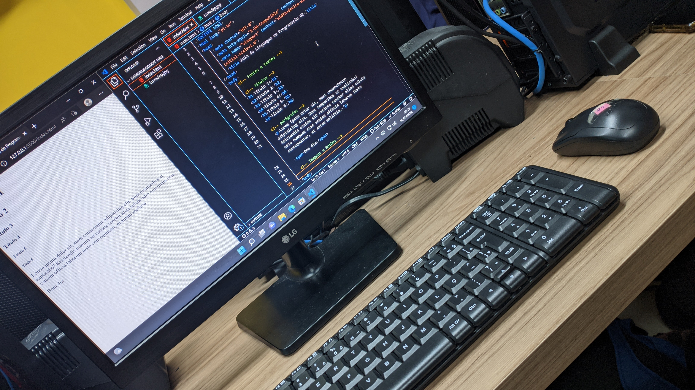

19 de maio de 2022
Comecei a Estudar Programação

Me matriculei no curso técnico de informática no Instituto Loide
Martha, foi onde eu tive meu primeiro contato com programação e eu
adorei, minha primeira aula de HTML, ministrado pelo professor Joelson
Dias.